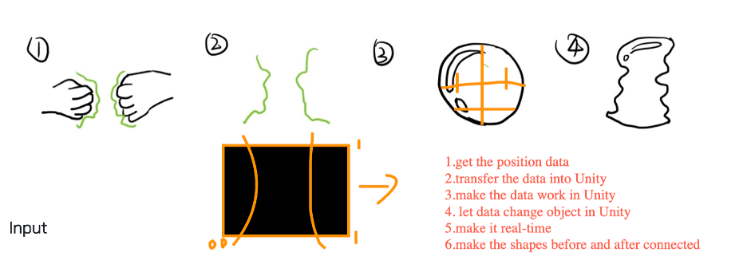
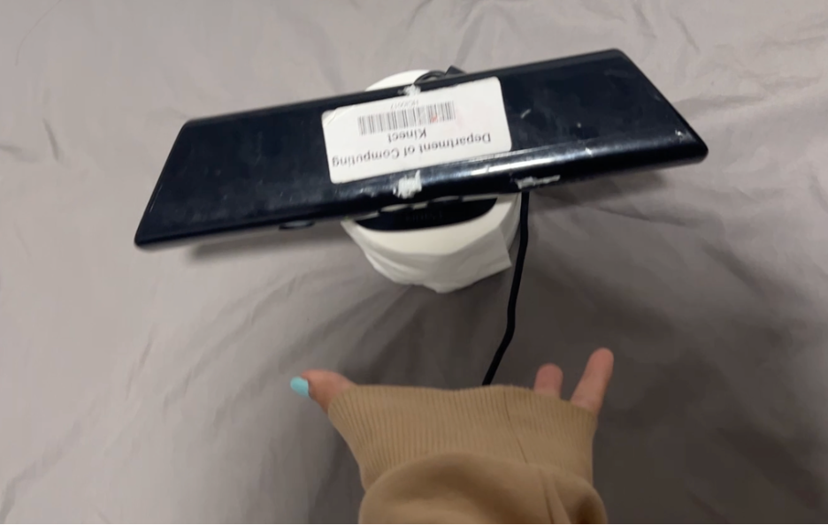
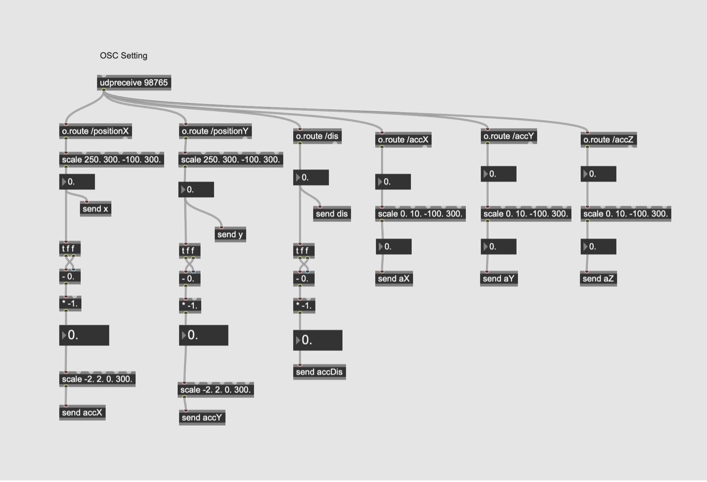
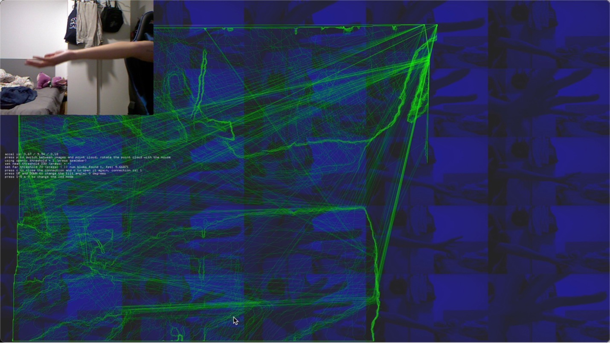
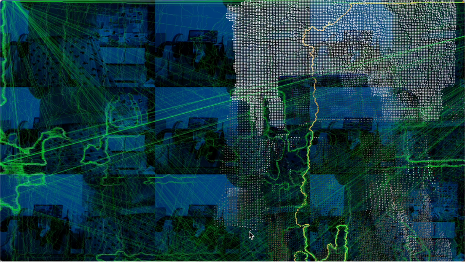
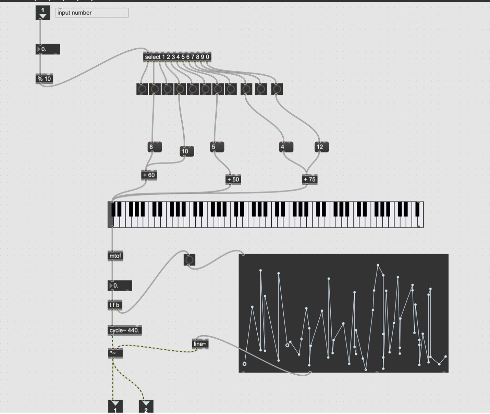

Inversion and Absence
An interactive installation that can capture the body contour and create random sound.
Produced by Zidian Pan
Produced by Zidian Pan
It is an interactive installation or experiment. By using Kinect Camera, it can capture the body contour of the audience then visualize the outlines. The contour data will be converted into random sound which is processed by Max. Other visual effects are used also to convey the concept about absence in time. The participants could interact with others or move alone and result in negative or inversion visual effect.
Introduction
It is an interactive installation or experiment. By using Kinect Camera, it can capture the body contour of the audience then visualize the outlines. The contour data will be converted into random sound which is processed by Max. Other visual effects are used also to convey the concept about absence in time. The participants could interact with others or move alone and result in negative or inversion visual effect.
Concept and Background Research
Nowadays, meeting with web 3.0, with its easy, direct and massive access to people and their ideas, ‘presence’ can easily become a morbid but unnoticeable desire at the moment. I want to move away from it and embrace the absence of the individual and the gaps in the traces by focusing on them. ‘Our understanding of perception needs to be expanded beyond just seeing present objects and scenes, and that absence perception is an important aspect of how we perceive the world around us.’
In this piece of work, the Kinect camera is used to recognize the contours of the participant’s body in a real-time. As the audience moves, the contour lines become a trace that is left behind, outlining shapes that emphasize parts of him that were not there. This movement also causes a random change in electronic sound that becomes a harsh sound upon leaving, suggesting that a part of the potential is absent.
Technical Implementation

The input should be the outlines of human’s body or body parts like hands, faces or feet, which will be capture by camera. In this case, it is Kinect Camera. I used ofxKinect addon in OpenFrameworks to get the contour data successfully.

For connection part, the ofxOSC addon is applied to send centroid position of the maximum contour and the distance between the centroid and person in real-time get by Kinect. And the data are received by OSC plug-in in Max which is visual programming software.

In the beginning design, the output should be the dynamic, squeezed, transformable bubble or bubbles with clear outline presented on screen. The more important is that it was reshaped using the data got in input. Specifically, the shape of bubble should be the negative of human body’s structure. For output, there are some software or libraries could afford wonderful scenes. Unity is excellent in building similar models and it has Rich, open-source model library. Another choice is the whole project could be proceeded in VR or AR. Also, Three.js could be used to build AR work to make work more interactive maybe. However, during the creation, I realized that it is too hard to learn new techniques in short time no need to say applying the 3d related technique. I decided to realize the visual effect by combining OpenCV.
In the final output part, the contour of body shape will be drawn in real-time and the track of it will also be left. Thus, the empty part could represent the absence of human, which emphasizes the theme of this project. The whole page is divided by grids to show time-lapse video of different moments. This can also represent the absence of time produced by the moving trajectory. And the real-time image got by Kinect in form of ‘point cloud’ provides another visual effect.

In the final output part, the contour of body shape will be drawn in real-time and the track of it will also be left. Thus, the empty part could represent the absence of human, which emphasizes the theme of this project. The whole page is divided by grids to show time-lapse video of different moments. This can also represent the absence of time produced by the moving trajectory. And the real-time image got by Kinect in form of ‘point cloud’ provides another visual effect.

Since changing the 3D shape according to real-time data cannot be realized, sound effects can be used as variables to prove the expression. After received the OSC values, the data could be processed to generate electronic sounds creating depressive atmosphere.

Reflection and Future Development
I successfully used the Kinect and processed the acquired data using both visual and acoustic programming. Unfortunately, the result was not accurate enough. Hopefully, the data should be acquired by Max can cause more significant changes in the sound, and it is one of the goals of future iterations to make the sound effects produced in the software more appropriate to the subject matter through sound design.
Also, the initial desire to have a real-time output method for 3D Mesh in Unity is still what I want most. If this were possible, the audience would have a better interactive experience and they would have a clearer understanding of the core ideas of the project.
Also, the initial desire to have a real-time output method for 3D Mesh in Unity is still what I want most. If this were possible, the audience would have a better interactive experience and they would have a clearer understanding of the core ideas of the project.
References
[1] Hommen, David. “Absences as Latent Potentialities.” Philosophical Papers 45, no. 3 (2016): 401–35. https://doi.org/10.1080/05568641.2016.1245829.
[2] Farennikova, Anna. “Seeing Absence.” Philosophical Studies 166, no. 3 (2012): 429–54. https://doi.org/10.1007/s11098-012-0045-y.
[3] Walton, Saige, and Lucio Crispino. “Screening the Artist: Between Presence/Absence, Immediacy/Mediation.” Alphaville. Film and Screen Media, University College Cork, July 15, 2022. https://www.alphavillejournal.com/Issue23/HTML/Editorial.html.
[4] Roberts, Tom, and Joel Krueger. “Loneliness and the Emotional Experience of Absence.” The Southern Journal of Philosophy 59, no. 2 (2020): 185–204. https://doi.org/10.1111/sjp.12387.
[5] Fracture.io – openFrameworks and Unity for realtime body sculptures, Aaron Meyers, Jeff Crouse, MPC Digital, The One Club, Will Adams, https://www.creativeapplications.net/environment/fracture-io-openframeworks-and-unity-for-realtime-body-sculptures/
Code Resources
[1] ofxOsx Documentation by openFramworks, https://openframeworks.cc/documentation/ofxOsc/
[2] ofxKinect Documentation by openFramworks, https://openframeworks.cc/documentation/ofxKinect/ofxKinect/
[3] ofxOpenCv Documentation by openFramworks, https://openframeworks.cc/documentation/ofxOpenCv/
[4] ‘Working with video: frame buffer grid’, Rebecca Aston, Programming for Artists and Designers, https://learn.gold.ac.uk/mod/page/view.php?id=1169708
[5] ‘OFx: Kinect fiery coment’, Rebecca Aston, Workshops for Creative Coding 2, https://learn.gold.ac.uk/mod/page/view.php?id=1241939